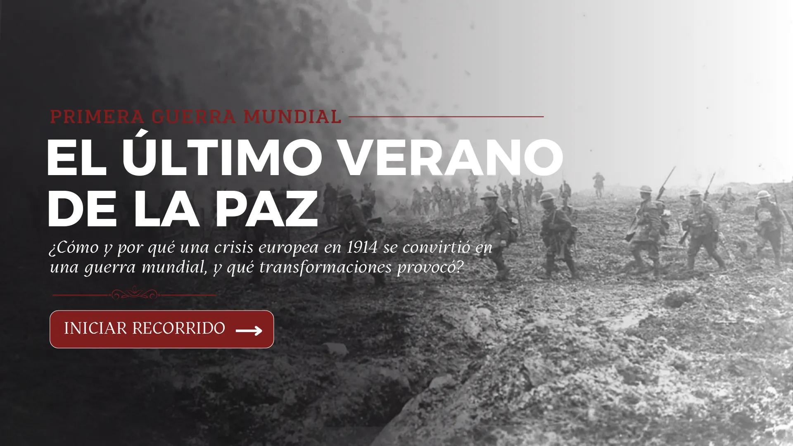

PRIMERA GUERRA MUNDIAL
EL ÚLTIMO VERANO
DE LA PAZ
¿Cómo y por qué una crisis europea en 1914 se convirtió en
una guerra mundial, y qué transformaciones provocó?
INICIAR RECORRIDO

ANTES DE COMENZAR...
Algunos conceptos necesarios para comprender la Europa de 1914.
IMPERIALISMO NACIONALISMO
Expansión del poder de un Estado sobre otros
Sentimiento de pertenencia y defensa de los
territorios.
intereses de una nación.
MILITARISMO ALIANZA
Importancia creciente del poder militar en la Acuerdo entre Estados para cooperar y
política de un Estado. defender intereses comunes.
POTENCIA MOVILIZACIÓN
Estado con gran influencia económica, política o Preparación y desplazamiento de las fuerzas
militar. militares para la guerra.
Continuar

PROTAGONISTAS DENTRO DE LA GUERRA
Guillermo II Francisco Fernando
Emperador de Alemania Heredero al trono
que respaldó la política austrohúngaro cuyo asesinato
de expansión y otorgó en Sarajevo el 28 de junio de
el "cheque en blanco" a 1914 desencadenó la crisis
Austria-Hungría al diplomática que dio inicio a la
estallar la crisis. Primera Guerra Mundial.
Francisco José I Zar Nicolás II
Emperador de Austria y Emperador de Rusia que
rey de Hungría que ordenó la movilización
firmó la declaración de general de las fuerzas
guerra contra Serbia, armadas en defensa de
activando las alianzas Serbia, ingresando al
militares europeas. bloque aliado.
Continuar

Contexto previo
EUROPA LLENA DE TENSIONES
LA COMPETENCIA POR EL DOMINIO
Crecimiento industrial
A finales del siglo XIX, el crecimiento del capitalismo
provocó una fuerte competencia entre las potencias
europeas por nuevos mercados de exportación, rutas
comerciales y materias primas.
Rivalidades entre potencias
La disputa por territorios comerciales y el debilitamiento
del Imperio Otomano intensificaron las rivalidades
económicas, militares y la desconfianza entre las naciones
Anterior Continuar
RECORRIDO HISTÓRICO
1914 1915 1916 1917 1918 1919

Contexto previo
TRIPLE ALIANZA Y TRIPLE ENTENTE
La competencia por territorios y recursos no solo enfrentó a las potencias: también hizo que buscaran aliados.
TRIPLE ALIANZA TRIPLE ENTENTE
Alemania Francia
Austria-Hungría Rusia
Italia Gran Bretaña
Buscaban proteger sus intereses y
defenderse de posibles agresiones. Estas
alianzas dividieron Europa y provocaron que
un conflicto local pudiera involucrar a varias
potencias
Anterior Continuar
RECORRIDO HISTÓRICO
1914 1915 1916 1917 1918 1919

Contexto previo
CARRERA ARMAMENTISTA
A la par de la formación de las alianzas, las potencias europeas iniciaron una carrera militar. Lo que llevó al
pensamiento de que la única forma de evitar un ataque enemigo era estando mejor preparado.
ARMAMENTO
EJÉRCITOS
PODER NAVAL
Alemania, bajo el káiser Guillermo II, Las potencias incrementaron Se centraron en modernizar
intentó desafiar el dominio naval el tamaño de sus ejércitos sus armamentos con fusiles
británico. Gran Bretaña respondió mediante el servicio militar de repetición, artillería
construyendo el HMS Dreadnought obligatorio. pesada y ametralladoras.
Anterior Continuar
RECORRIDO HISTÓRICO
1914 1915 1916 1917 1918 1919

Detonantes
LAS GUERRAS BALCÁNICAS
En medio de la tensión se presentó el proceso de desintegración del imperio Otomano, lo que generó una serie de
hechos que aumentó el conflicto en las potencias.
1 2 3
La Liga Balcánica El reparto de los territorios Las crisis balcánicas
buscó expulsar a los generó conflictos entre los alteraron el equilibrio de
otomanos del vencedores; Bulgaria atacó poder en Europa, ya que
continente y a sus antiguos aliados y Austria-Hungría vio a
repartirse sus fue derrotada, dejando al Serbia como una amenaza
territorios restantes, Reino de Serbia como la directa y Rusia reforzó su
lo que transformó a potencia victoriosa de la compromiso de protegerla,
los Balcanes en el región, con un agresivo hasta llegar al atentado de
“polvorín de Europa” nacionalismo paneslavista. Sarajevo.
Anterior Continuar
RECORRIDO HISTÓRICO
1914 1915 1916 1917 1918 1919

Detonantes
ATENTADO DE SARAJEVO
Gavrilo Princip asesinó a Francisco Fernando y Sofía Chotek en Sarajevo, lo
Revelar
28 de junio que se convirtió en la prueba definitiva de que el nacionalismo de Serbia
detalles
buscaba destruir la integridad territorial de Austria-Hungría.
Con el cheque en blanco de Alemania, Austria-Hungría envió un ultimátum
28 de julio con exigencias casi imposibles de aceptar" Serbia rechazó la violación de su
soberanía y declaró la guerra con el bombardeo de Belgrado.
El sistema de alianzas y los planes de movilización transformaron "en cinco
Crisis de Julio
semanas una crisis regional en los Balcanes a un conflicto continental".
Fue de esta manera que la guerra había comenzado.
Anterior Continuar al desarrolllo
RECORRIDO HISTÓRICO
1914 1915 1916 1917 1918 1919

Detonantes
ATENTADO DE SARAJEVO
¿Quiénes eran Gavrilo Princip y Francisco Fernando?
Gravrilo Princip:
Francisco
Nacionalista serbio e
Fernando:
integrante de la
Heredero al trono
organización “Joven
austrohúngaro,
Bosnia” que provoco
cuyo asesinato
el asesinato del
desencadenó la
archiduque.
crisis diplomática.
Regresar

Desarrollo
LA BATALLA DE MARNE
Explorar avances
Alemania puso en marcha el Plan Schlieffen
para derrotar rápidamente a Francia
mediante la invasión a través de Bélgica.
A principios de septiembre de 1914, las
fuerzas anglo-francesas frenaron la ofensiva
alemana en el Marne.
¿Por qué fue importante?
La posibilidad de una victoria rápida alemana
quedó frustrada y el conflicto tomó otro
rumbo.
Anterior Continuar
RECORRIDO HISTÓRICO
1914 1915 1916 1917 1918 1919

Desarrollo
LA BATALLA DE MARNE
Regresar al mapa
Alemania puso en marcha el Plan Schlieffen
para derrotar rápidamente a Francia La ofensica alemana se desarrolló conforme al
1
mediante la invasión a través de Bélgica. plan de Shlieffen y llegó hasta las puertas de París.
El flanco derecho alemán obligó a los franceses a
A principios de septiembre de 1914, las 2
replegarse hacia el sur.
fuerzas anglo-francesas frenaron la ofensiva
alemana en el Marne.
Del 6 al 9 de setiembre 800000 y 50000 británicos
3
paran la ofensiva, abre una brecha y se infiltran
¿Por qué fue importante?
entre dos ejércitos alemanes.
La posibilidad de una victoria rápida alemana
quedó frustrada y el conflicto tomó otro 4 Las fuerzas alemanas se repliegan hasta Verdún.
rumbo.
Anterior Continuar
RECORRIDO HISTÓRICO
1914 1915 1916 1917 1918 1919

Desarrollo
LA GUERRA DE TRINCHERAS
Incapaces de franquear mutuamente tras la "Carrera hacia el Mar", ambos bandos excavaron una vasta red de
trincheras que se extiendía ininterrumpidamente desde la costa del mar del Norte hasta la frontera suiza.
¿Cómo eran las trincheras? ¿Cómo se sentían los soldados?
Eran pasillos excavados en zigzag contra la metralla, Sufrían agotamiento, terror por la artillería y trauma
con refugios subterráneos y tarimas de madera sobre psicológico, sobrellevándolo con camaradería, humor
el barro, infestados de ratas y piojos. negro y treguas tácitas con el enemigo.
Anterior Continuar
RECORRIDO HISTÓRICO
1914 1915 1916 1917 1918 1919

Desarrollo
LA CAMPAÑA DE GALÍPOLI
OBJETIVO ESTRATÉGICO RESULTADO
Ante el estancamiento europeo, La defensa otomana, dirigida
las Potencias Aliadas idearon por asesores alemanes, infligió
una operación para tomar la fuertes derrotas y numerosas
península de Galípoli y el bajas a las fuerzas aliadas. La
estrecho de los Dardanelos. El campaña terminó en una
fin era doble: abrir una ruta caótica retirada, frustrando las
marítima directa para abastecer esperanzas de romper el
al Imperio ruso y sacar al equilibrio del conflicto por el
Imperio Otomano de la guerra. sur.
Anterior Continuar
RECORRIDO HISTÓRICO
1914 1915 1916 1917 1918 1919

Desarrollo
LAS BATALLAS DE VERDÚN Y EL SOMME
Estas batallas fueron dos de los enfrentamientos más grandes, sangrientos y devastadores de la Primera Guerra
Mundial en el frente occidental.
BATALLA DE VERDÚN BATALLA DEL SOMME
Revelar información de las batallas
Anterior Continuar
RECORRIDO HISTÓRICO
1914 1915 1916
1917 1918 1919

Desarrollo
LAS BATALLAS DE VERDÚN Y EL SOMME
BATALLA DE VERDÚN BATALLA DEL SOMME
Fecha: 21 de febrero – 18 de diciembre de 1916 Fecha: 1 de julio – 18 de noviembre de 1916
Ubicación: Colinas al norte de Verdún-sur- Ubicación: A lo largo del río Somme, en Francia.
Meuse, en el noreste de Francia.
Beligerantes: Tropas franco-británicas (Aliados)
Beligerantes: Alemania contra Francia
contra Alemania.
Objetivo: Alemania lanzó una ofensiva masiva Objetivo: Romper las líneas alemanas y, de
contra la plaza fuerte de Verdún con la explícita forma inmediata, aliviar la tremenda presión
intención de "desangrar" al ejército francés militar que sufrían los franceses en Verdún.
hasta la extenuación.
Bajas: Más de 1 millón de bajas (alrededor de
620.000–750.000 aliados y 465.000 alemanes).
Bajas: Alrededor de 700.000 a 750.000 víctimas
Anterior Continuar
RECORRIDO HISTÓRICO
1914 1915 1916 1917
1918 1919

Desarrollo
LA REVOLUCIÓN RUSA
El desmedido esfuerzo bélico, la escasez generalizada y las colosales pérdidas
¿Cómo inicio?
humanas quebrantaron el apoyo popular al régimen zarista.
¿Qué provocó la Las revueltas de febrero de 1917 derrocaron al Zar Nicolás II, instaurando un
caída del zar? gobierno provisional que decidió continuar la guerra.
¿Qué paso con La incapacidad del gobierno provisional para estabilizar el país propició la
ese gobierno? Revolución de Octubre de 1917
Los bolcheviques, tomaron el poder y firmaron formalmente el Tratado de Brest-
¿En qué terminó
Litovsk a principios de 1918, cediendo vastos territorios a cambio de retirar a
el conflicto?
Rusia de la guerra.
Anterior Continuar
RECORRIDO HISTÓRICO
1914 1915 1916
1917 1918 1919

Desarrollo
LA ENTRADA DE ESTADOS UNIDOS EN EL CONFLICTO
¿QUÉ PROVOCÓ SU ENTRADA?
La guerra submarina sin restricciones
Alemania reanudó a principios de 1917 la guerra submarina
1
sin restricciones, hundiendo embarcaciones mercantes y
estadounidenses. Esto incrementó el conflicto diplomático con
Estados Unidos.
El Telegrama Zimmermann
Alemania propuso a México una alianza contra Estados Unidos
2
en caso de que este último entrara en la guerra. El contenido
del telegrama fue interceptado y posteriormente conocido por
el gobierno estadounidense.
Anterior Continuar
RECORRIDO HISTÓRICO
1914 1915 1916
1917 1918 1919

Desarrollo
LA ENTRADA DE ESTADOS UNIDOS EN EL CONFLICTO
LA DECLARACIÓN DE GUERRA
Ante el deterioro de las relaciones, Estados Unidos declaró la
guerra a Alemania el 6 de abril de 1917.
RESULTADOS
La declaración de guerra formal de Washington inyectó un
flujo masivo de recursos financieros, suministros
industriales frescos y tropas de refresco al bando aliado,
contrarrestando con creces la salida de Rusia del conflicto.
Anterior Continuar
RECORRIDO HISTÓRICO
1914 1915 1916
1917 1918 1919

Desarrollo
LAS OFENSIVAS FINALES DE 1918
Continuar
RECORRIDO HISTÓRICO
1914 1915 1916
1917 1918 1919
AREVAMIRP
AL
ED
AVISNEFO
OFENSIVA PRESENTADA POR ALEMANIA
Fecha: 21 de marzo – 18 de julio de 1918
Expandir mapa
Causantes:
Salida de Rusia del conflicto
Inminente llegada masiva de tropas estadounidenses
Posible colapso de la economía Alemana por bloqueo naval
Objetivo:
Alemania lanzó una última serie de ataques desesperados en
el Frente Occidental para romper las líneas aliadas.
Resultado:
Aunque lograron avances territoriales iniciales, las fuerzas
alemanas se quedaron sin reservas ni suministros.
Anterior

Desarrollo
LAS OFENSIVAS FINALES DE 1918
LAS 4 FASES OFENSIVAS
Operación Michael (21 de marzo – 5 de
1
abril de 1918):
Operación Georgette (9 de abril – 29
2
de abril de 1918)
Operación Blücher-Yorck (27 de maio –
3
4 de junio de 1918):
Operación Gneisenau (9 de junio – 12
4
de junio de 1918)
Regresar

Desarrollo
LAS OFENSIVAS FINALES DE 1918
Expandir mapa
Anterior Continuar con las consecuencias
RECORRIDO HISTÓRICO
1914 1915 1916
1917 1918 1919
SAÍD
NEIC
SOL
ED
AVISNEFO
OFENSIVA PRESENTADA POR LOS ALIADOS
Fecha: 8 de agosto - 11 de noviembre de 1918
Causantes:
Superioridad material aportada por Estados Unidos
Fracaso Aleman en la Ofensiva de la Primavera
Objetivo:
Aprovechar el fracaso Alemán para lanzar un contraataque
general coordinado usando tanques, infantería y apoyo aéreo,
Resultado:
Precipitó el derrumbe militar de los Imperios Centrales, la
abdicación del Kaiser y la firma del armisticio

Desarrollo
LAS OFENSIVAS FINALES DE 1918
Regresar

Consecuencias
1- TRATADO DE VERSALLES
Firmado el 28 de junio de 1919 tras la Conferencia
de Paz de París, este acuerdo entre los aliados
reorganizó el mapa de Europa y fijó las condiciones
de rendición para las Potencias Centrales.
Ver detalles
2- IMPACTO DEMOGRÁFICO
Ver detalles
1 Pérdidas humanas y económicas
2 Rediseño del mapa de Oriente Próximo Ver detalles
3 Transformación del rol de la mujer
Ver detalles

Consecuencias
1- TRATADO DE VERSALLES
El tratado perjudicó preferencialmente a
Alemania con duras pérdidas:
Cedió el 13 % de su territorio europeo y todas
sus colonias.
Sufrió un desarme militar (límite de 100.000
soldados y prohibición de aviación, tanques y
submarinos) y la desmilitarización de Renania.
Lejos de garantizar una paz duradera, el
Fue obligada a asumir la culpa de la guerra y a Tratado de Versalles generó una gran
pagar enormes reparaciones económicas a los inestabilidad económica y política en Europa.
aliados.
Regresar

Consecuencias
1 PÉRDIDAS HUMANAS Y ECONÓMICAS
GASTOS DE LA GUERRA
(EN MILLONES DE DÓLARES)
FALLECIDOS DURANTE LA GUERRA
Reino Unido 723.000 Reino Unido 43,8
Imperio Británico (Sin el RU) 198.000 Imperio Británico (Sin el RU) 5,8
Francia 1.398.000 Francia 28,2
Rusia 1.811.000 Rusia 16,3
Italia 578.000 Italia 14,7
EE.UU. 114.000 EE.UU. 36,2
Otros Aliados 599.000 Otros Aliados 2,0
Total Aliados y EE.UU. 5.421.000 Total Aliados y EE.UU. 147,0
Alemania 2.037.000 Alemania 47,0
Imperio Austrohúngaro 1.100.000 Imperio Austrohúngaro 13,4
Bulgaria y Turquía 892.000 Bulgaria y Turquía 1,1
Total Potencias Centrales 4.029.000 Total Potencias Centrales 61,5
Total Absoluto 9.450.000 Total Absoluto 208,5
Regresar

Consecuencias
2 REDISEÑO DEL MAPA DE ORIENTE PRÓXIMO
Tras la Primera Guerra Mundial, los tratados de paz y
acuerdos entre potencias reconfiguraron
drásticamente el mapa político de Europa y Oriente
Próximo al disolver los antiguos imperios y trazar
nuevas fronteras nacionales.
Reconfiguración europea:
Surgieron nuevos Estados para frenar la expansión
soviética, aunque millones de minorías quedaron
atrapadas en fronteras ajenas.
Reparto de Oriente Próximo:
Gran Bretaña y Francia dividieron el Imperio
Otomano sin respetar identidades locales, generando
conflictos permanentes.
Regresar

Consecuencias
3 TRANSFORMACIÓN DEL ROL DE LA MUJER
Durante la Primera Guerra Mundial, la falta de mano de obra
masculina llevó a las mujeres a asumir roles clave en industrias,
transporte y enfermería, demostrando su capacidad para
sostener la economía.
Autonomía económica y laboral:
Ocuparon empleos antes exclusivos para hombres, logrando
independencia fuera del hogar.
Su protagonismo aceleró de forma
Emancipación y derechos políticos:
irreversible su emancipación social y
Transformaron las costumbres tradicionales y consiguieron la
política.
aprobación del sufragio femenino en varios países.
Regresar

Conclusión
¿CÓMO Y POR QUÉ UNA CRISIS EUROPEA EN 1914 SE CONVIRTIÓ EN UNA
GUERRA MUNDIAL, Y QUE TRANSFORMACIONES PROVOCÓ?
La Primera Guerra Mundial escaló de un conflicto balcánico a una
guerra global debido a décadas de rivalidades imperialistas,
carreras armamentistas y alianzas militares, culminando con la
caída de los grandes imperios tradicionales y una profunda
reconfiguración geopolítica, económica y social del siglo XX.
Reordenamiento político:
Cayeron cuatro grandes imperios y se redibujaron las
fronteras de Europa y Oriente Próximo.
Cambio socioeconómico:
En conclusión, las duras sanciones de la posguerra y el
resentimiento acumulado crearon una paz inestable que
Se impulsó el sufragio femenino y el poder financiero
detonó la Segunda Guerra Mundial.
mundial pasó de Europa a Estados Unidos.

Fin del recorrido
LA HISTORIA NO TERMINA AQUÍ
Has llegado al final de este recorrido por la Primera Guerra Mundial. Ahora que conoces los acontecimientos, sus
protagonistas y las consecuencias que transformaron el mundo, Te dejamos dos recursos preparados por
nuestro equipo para profundizar en lo aprendido:
01. VIDEOPODCAST
Revive los hechos más destacados a través de nuestro análisis y conversación.
Ver el videopodcast ->
02. CUESTIONARIO
Pon a prueba tus conocimientos y comprueba cuánto aprendiste.
Realizar cuestionario ->
Si deseas explorar más puedes leer nuestra bibliografía o contactarnos.
Revisar bibliografía Conocer integrantes

VIDEOPODCAST

¿Qué provocó la entrada de EE.UU a la Gran Guerra?
El telegrama de Zimmermann y la guerra submarina sin restricciones.
El ataque alemán indiscriminado a navíos extranjeros.
La derrota francesa en la batalla de Verdún.
Una alianza militar firmada entre México y Alemania contra Estados Unidos.
¡Correcto!
¿Qué países formaban la Triple Alianza, impulsada por Otto von Bismarck en 1882?
Austria-Hungría, Italia y Gran Bretaña
Alemania, Imperio Otomano y Rusia
Alemania, Austria-Hungría e Italia
Francia, Rusia y Gran Bretaña
¡Correcto!
Continuar

¿Por qué fue tan importante la batalla del Marne (septiembre de 1914)?
Puso fin a la guerra en el frente occidental
Frustró la posibilidad de una victoria rápida alemana y cambió el rumbo del conflicto
La derrota francesa en la batalla de Verdún
Una alianza militar firmada entre México y Alemania contra Estados Unidos
¡Correcto!
¿A que suceso se le atribuye como la causa principal de la Primera Guerra Mundial?
El telegrama de Zimmermann y la guerra submarina sin restricciones
La guerra entre la liga bal
La derrota francesa en la guerra Franco-Prusiana
El asesinato del archiduque Francisco Fernando
¡Correcto!
Continuar

INTEGRANTES DEL PROYECTO
Somos un grupo de estudiantes de la Universidad Católica San Pablo apasionados por la programación y la
historia. Si deseas contactarnos te dejamos nuestros nombres y correos.
Ariana Lucía Pinto Del Carpio Gabriel Armando Coaquira Ale
ariana.pinto@ucsp.edu.pe gabriel.coaquira@ucsp.edu.pe
Samuel Eitan Diaz Ortiz Diego Fernando Sosa Sanga
samuel.diaz@ucsp.edu.pe diego.sosa@ucsp.edu.pe
Tiago Paolo Suárez Salas Benjamin Alejandro Mamani Valdez
tiago.suarez@ucsp.edu.pe benjamin.mamani.valdez@ucsp.edu.pe
Diego Alonso Aragon Mamani
diego.aragon@ucsp.edu.pe

BIBLIOGRAFÍA
MacMillan, M. (2013). The war that ended peace: The road to 1914. Random House.
Clark, C. (2012). The sleepwalkers: How Europe went to war in 1914. HarperCollins.
Stibbe, M. (2001). Germany, 1914–1918: Politics, society and culture in wartime. Routledge
Sked, A. (2008). Decline and fall of the Habsburg Empire, 1815–1918. Longman.
Erickson, E. J. (2001). Ordered to die: A history of the Ottoman army in the First World War.
Greenwood Press.
Figes, O. (1996). A people's tragedy: The Russian Revolution 1891–1924. Jonathan Cape.
Watson, A. (2014). Ring of steel: Germany and Austria-Hungary in World War I. Yale University
Press.
Adams, R. J. Q. (1999). Arms and the wizard: Lloyd George and the Ministry of Munitions, 1915–
1916. Texas A&M University Press.
Stevenson, D. (2004). 1914–1918: The history of the First World War. Penguin Books.
Rogan, E. (2016). La caída de los otomanos: La Gran Guerra en el Oriente Próximo (T. Fernández
Aúz & B. Eguibar, Trads.). Crítica.
Hobsbawm, E. (1998). Historia del siglo XX: 1914-1991 (J. Pradera & A. Sánchez, Trads.). Crítica.